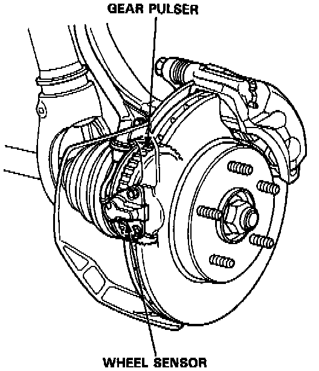

Wheel Speed Sensor (Traction Control)
DESCRIPTIONThe TCS "shares" the wheel sensors with the anti-lock brake system (ABS). The wheel sensors transmit the wheel speed signals to the TCS control unit through the ABS control unit.

OPERATION
Wheel rotation speed is detected by the wheel sensors, located at each wheel. The signals are sent to the control unit, which compares each wheel's speed and determines whether traction control is required.